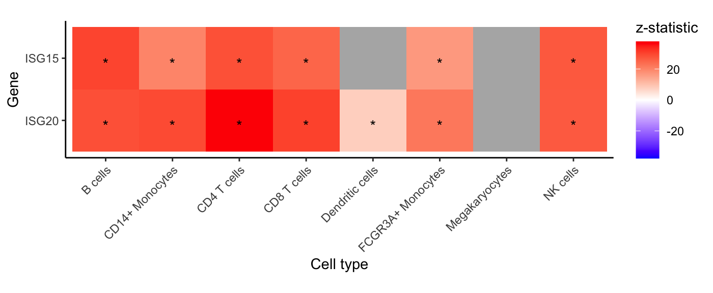
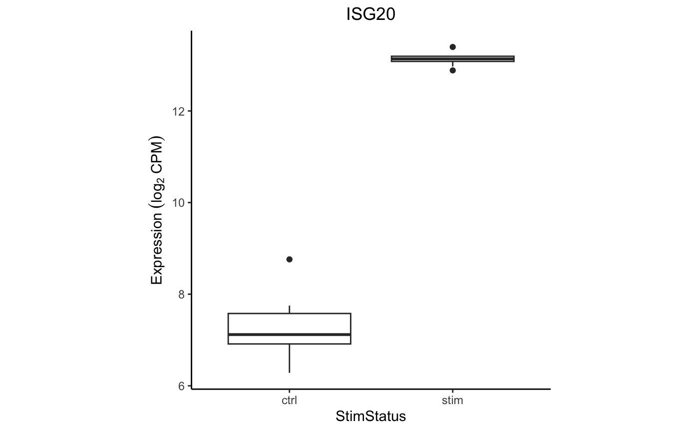

Dreamlet analysis of single cell RNA-seq
Linear (mixed) model analysis of pseudobulk data
Developed by Gabriel Hoffman
Run on 2024-10-22 16:35:09
Source:vignettes/dreamlet.Rmd
dreamlet.RmdIntroduction
As the scale of single cell/nucleus RNA-seq has increased, so has the complexity of study designs. Analysis of datasets with simple study designs can be performed using linear model as in the muscat package. Yet analysis of datsets with complex study designs such as repeated measures or many technical batches can benefit from linear mixed model analysis to model to correlation structure between samples. We previously developed dream to apply linear mixed models to bulk RNA-seq data using a limma-style workflow. Dreamlet extends the previous work of dream and muscat to apply linear mixed models to pseudobulk data. Dreamlet also supports linear models and facilitates application of 1) variancePartition to quantify the contribution of multiple variables to expression variation, and 2) zenith to perform gene set analysis on the differential expression signatures.
Installation
To install this package, start R (version “4.3”) and enter:
if (!require("BiocManager", quietly = TRUE)) {
install.packages("BiocManager")
}
# Select release #1 or #2
# 1) Bioconductor release
BiocManager::install("dreamlet")
# 2) Latest stable release
devtools::install_github("DiseaseNeurogenomics/dreamlet")Process single cell count data
Here we perform analysis of PBMCs from 8 individuals stimulated with interferon-β (Kang, et al, 2018, Nature Biotech). This is a small dataset that does not have repeated measures or high dimensional batch effects, so the sophisticated features of dreamlet are not strictly necessary. But this gives us an opportunity to walk through a standard dreamlet workflow.
Preprocess data
Here, single cell RNA-seq data is downloaded from ExperimentHub.
library(dreamlet)
library(muscat)
library(ExperimentHub)
library(zenith)
library(scater)
# Download data, specifying EH2259 for the Kang, et al study
eh <- ExperimentHub()
sce <- eh[["EH2259"]]
sce$ind = as.character(sce$ind)
# only keep singlet cells with sufficient reads
sce <- sce[rowSums(counts(sce) > 0) > 0, ]
sce <- sce[, colData(sce)$multiplets == "singlet"]
# compute QC metrics
qc <- perCellQCMetrics(sce)
# remove cells with few or many detected genes
ol <- isOutlier(metric = qc$detected, nmads = 2, log = TRUE)
sce <- sce[, !ol]
# set variable indicating stimulated (stim) or control (ctrl)
sce$StimStatus <- sce$stimAggregate to pseudobulk
Dreamlet, like muscat, performs analysis at the pseudobulk-level by
summing raw counts across cells for a given sample and cell type.
aggregateToPseudoBulk is substantially faster for large
on-disk datasets than muscat::aggregateData.
# Since 'ind' is the individual and 'StimStatus' is the stimulus status,
# create unique identifier for each sample
sce$id <- paste0(sce$StimStatus, sce$ind)
# Create pseudobulk data by specifying cluster_id and sample_id
# Count data for each cell type is then stored in the `assay` field
# assay: entry in assayNames(sce) storing raw counts
# cluster_id: variable in colData(sce) indicating cell clusters
# sample_id: variable in colData(sce) indicating sample id for aggregating cells
pb <- aggregateToPseudoBulk(sce,
assay = "counts",
cluster_id = "cell",
sample_id = "id",
verbose = FALSE
)
# one 'assay' per cell type
assayNames(pb)## [1] "B cells" "CD14+ Monocytes" "CD4 T cells"
## [4] "CD8 T cells" "Dendritic cells" "FCGR3A+ Monocytes"
## [7] "Megakaryocytes" "NK cells"Voom for pseudobulk
Apply voom-style normalization for pseudobulk counts within each cell cluster using voomWithDreamWeights to handle random effects (if specified).
# Normalize and apply voom/voomWithDreamWeights
res.proc <- processAssays(pb, ~StimStatus, min.count = 5)
# the resulting object of class dreamletProcessedData stores
# normalized data and other information
res.proc## class: dreamletProcessedData
## assays(8): B cells CD14+ Monocytes ... Megakaryocytes NK cells
## colData(4): ind stim multiplets StimStatus
## metadata(3): cell id cluster
## Samples:
## min: 13
## max: 16
## Genes:
## min: 164
## max: 5262
## details(7): assay n_retain ... n_errors error_initialprocessAssays() retains samples with at least
min.cells in a given cell type. While dropping a few
samples usually is not a problem, in some cases dropping sames can mean
that a variable included in the regression formula no longer has any
variation. For example, dropping all stimulated samples from analysis of
a given cell type would be mean the variable StimStatus has
no variation and is perfectly colinear with the intercept term. This
colinearity issue is detected internally and variables with these
problem are dropped from the regression formula for that particular cell
type. The number of samples retained and the resulting formula used in
each cell type can be accessed as follows. In this analysis, samples are
dropped from 3 cell types but the original formula remains valid in each
case.
# view details of dropping samples
details(res.proc)## assay n_retain formula formDropsTerms n_genes n_errors
## 1 B cells 16 ~StimStatus FALSE 1961 0
## 2 CD14+ Monocytes 16 ~StimStatus FALSE 3087 0
## 3 CD4 T cells 16 ~StimStatus FALSE 5262 0
## 4 CD8 T cells 16 ~StimStatus FALSE 1030 0
## 5 Dendritic cells 13 ~StimStatus FALSE 164 0
## 6 FCGR3A+ Monocytes 16 ~StimStatus FALSE 1160 0
## 7 Megakaryocytes 13 ~StimStatus FALSE 172 0
## 8 NK cells 16 ~StimStatus FALSE 1656 0
## error_initial
## 1 FALSE
## 2 FALSE
## 3 FALSE
## 4 FALSE
## 5 FALSE
## 6 FALSE
## 7 FALSE
## 8 FALSEHere the mean-variance trend from voom is shown for each cell type. Cell types with sufficient number of cells and reads show a clear mean-variance trend. While in rare cell types like megakaryocytes, fewer genes have sufficient reads and the trend is less apparent.
# show voom plot for each cell clusters
plotVoom(res.proc)
# Show plots for subset of cell clusters
# plotVoom( res.proc[1:3] )
# Show plots for one cell cluster
# plotVoom( res.proc[["B cells"]])Variance partitioning
The variancePartition package uses linear and linear mixed models to quanify the contribution of multiple sources of expression variation at the gene-level. For each gene it fits a linear (mixed) model and evalutes the fraction of expression variation explained by each variable.
Variance fractions can be visualized at the gene-level for each cell type using a bar plot, or genome-wide using a violin plot.
# run variance partitioning analysis
vp.lst <- fitVarPart(res.proc, ~StimStatus)
# Show variance fractions at the gene-level for each cell type
genes <- vp.lst$gene[2:4]
plotPercentBars(vp.lst[vp.lst$gene %in% genes, ])
# Summarize variance fractions genome-wide for each cell type
plotVarPart(vp.lst, label.angle = 60)
Differential expression
Since the normalized expression data and metadata are stored within
res.proc, only the regression formula remains to be
specified. Here we only included the stimulus status, but analyses of
larger datasets can include covariates and random effects. With formula
~ StimStatus, an intercept is fit and coefficient
StimStatusstim log fold change between simulated and
controls.
# Differential expression analysis within each assay,
# evaluated on the voom normalized data
res.dl <- dreamlet(res.proc, ~StimStatus)
# names of estimated coefficients
coefNames(res.dl)## [1] "(Intercept)" "StimStatusstim"
# the resulting object of class dreamletResult
# stores results and other information
res.dl## class: dreamletResult
## assays(8): B cells CD14+ Monocytes ... Megakaryocytes NK cells
## Genes:
## min: 164
## max: 5262
## details(7): assay n_retain ... n_errors error_initial
## coefNames(2): (Intercept) StimStatusstimVolcano plots
The volcano plot can indicate the strength of the differential expression signal with each cell type. Red points indicate FDR < 0.05.
plotVolcano(res.dl, coef = "StimStatusstim")
Gene-level heatmap
For each cell type and specified gene, show z-statistic from
dreamlet analysis. Grey indicates that insufficient reads
were observed to include the gene in the analysis.
genes <- c("ISG20", "ISG15")
plotGeneHeatmap(res.dl, coef = "StimStatusstim", genes = genes)
Extract results
Each entry in res.dl stores a model fit by dream(),
and results can be extracted using topTable() as in
limma by specifying the coefficient of interest. The
results shows the gene name, log fold change, average expression,
t-statistic, p-value, FDR (i.e. adj.P.Val).
# results from full analysis
topTable(res.dl, coef = "StimStatusstim")## DataFrame with 10 rows and 9 columns
## assay ID logFC AveExpr t P.Value
## <character> <character> <numeric> <numeric> <numeric> <numeric>
## 1 CD4 T cells ISG20 3.05455 10.40388 34.4774 3.14046e-22
## 2 CD4 T cells IFI6 5.66980 8.52892 33.5813 5.89835e-22
## 3 CD4 T cells MT2A 4.32697 7.80640 29.8959 9.44958e-21
## 4 CD14+ Monocytes IL1RN 7.07251 7.79103 35.1828 9.58042e-21
## 5 B cells ISG15 5.53079 10.20272 26.2270 1.16025e-20
## 6 CD4 T cells HERC5 4.23629 6.74189 29.2009 1.65334e-20
## 7 CD4 T cells ISG15 5.18872 10.06906 28.4163 3.15713e-20
## 8 B cells ISG20 3.33103 11.38360 24.1402 9.83897e-20
## 9 NK cells ISG15 4.76379 11.01479 24.7131 1.81450e-19
## 10 CD4 T cells TNFSF10 4.41588 7.49081 25.8759 2.89593e-19
## adj.P.Val B z.std
## <numeric> <numeric> <numeric>
## 1 4.27395e-18 40.9592 34.4774
## 2 4.27395e-18 40.1636 33.5813
## 3 3.36287e-17 37.4905 29.8959
## 4 3.36287e-17 36.7737 35.1828
## 5 3.36287e-17 37.1705 26.2270
## 6 3.99337e-17 36.7596 29.2009
## 7 6.53617e-17 36.3919 28.4163
## 8 1.78233e-16 35.1770 24.1402
## 9 2.92175e-16 34.4633 24.7131
## 10 4.19679e-16 34.1274 25.8759
# only B cells
topTable(res.dl[["B cells"]], coef = "StimStatusstim")## logFC AveExpr t P.Value adj.P.Val B
## ISG15 5.530786 10.202722 26.22702 1.160249e-20 2.275249e-17 37.17046
## ISG20 3.331031 11.383603 24.14017 9.838971e-20 9.647111e-17 35.17704
## LY6E 4.331290 8.706648 19.16241 3.474679e-17 2.271282e-14 29.27957
## IRF7 3.730427 8.678591 18.84058 5.310505e-17 2.603475e-14 28.88289
## UBE2L6 2.741292 9.241028 18.50765 8.290835e-17 3.251666e-14 28.47212
## EPSTI1 3.716921 8.107930 18.18089 1.292430e-16 3.651223e-14 27.96522
## PLSCR1 4.113193 8.271191 18.17475 1.303343e-16 3.651223e-14 27.96187
## IFITM2 2.999742 8.731566 17.76966 2.282011e-16 5.593779e-14 27.46272
## SAT1 2.206045 9.657178 17.41720 3.748297e-16 8.167123e-14 26.94871
## SOCS1 2.432287 8.588454 16.28257 1.965142e-15 3.853644e-13 25.32548Forest plot
A forest plot shows the log fold change and standard error of a given gene across all cell types. The color indicates the FDR.
plotForest(res.dl, coef = "StimStatusstim", gene = "ISG20")
Box plot
Examine the expression of ISG20 between stimulation conditions within
CD14+ Monocytes. Use extractData() to create a
tibble with gene expression data and metadata from
colData() from one cell type.
# get data
df <- extractData(res.proc, "CD14+ Monocytes", genes = "ISG20")
# set theme
thm <- theme_classic() +
theme(aspect.ratio = 1, plot.title = element_text(hjust = 0.5))
# make plot
ggplot(df, aes(StimStatus, ISG20)) +
geom_boxplot() +
thm +
ylab(bquote(Expression ~ (log[2] ~ CPM))) +
ggtitle("ISG20")
Advanced used of contrasts
A hypothesis test of the difference between two or more
coefficients can be performed using contrasts. The contrast matrix is
evaluated for each cell type in the backend, so only the contrast string
must be supplied to dreamlet().
# create a contrasts called 'Diff' that is the difference between expression
# in the stimulated and controls.
# More than one can be specified
contrasts <- c(Diff = "StimStatusstim - StimStatusctrl")
# Evalaute the regression model without an intercept term.
# Instead estimate the mean expression in stimulated, controls and then
# set Diff to the difference between the two
res.dl2 <- dreamlet(res.proc, ~ 0 + StimStatus, contrasts = contrasts)
# see estimated coefficients
coefNames(res.dl2)## [1] "Diff" "StimStatusctrl" "StimStatusstim"
# Volcano plot of Diff
plotVolcano(res.dl2[1:2], coef = "Diff")
This new Diff variable can then be used downstream for
analysis asking for a coefficient. But note that since there is no
intercept term in this model, the meaning of StimStatusstim
changes here. When the formula is 0 + StimStatus then
StimStatusstim is the mean expression in stimulated
samples.
For further information about using contrasts see makeContrastsDream() and vignette.
Gene set analysis
While standard enrichment methods like Fishers exact test, requires
specifying a FDR cutoff to identify differentially expressed genes.
However, dichotomizing differential expression results is often too
simple and ignores the quantitative variation captured by the
differential expression test statistics. Here we use
zenith, a wrapper for limma::camera,
to perform gene set analysis using the full spectrum of differential
expression test statistics. zenith/camera is a competetive test
that compares the mean test statistic for genes in a given gene set, to
genes not in that set while accounting for correlation between
genes.
Here, zenith_gsa takes a dreamletResult
object, the coefficient of interest, and gene sets as a
GeneSetCollection object from GSEABase.
# Load Gene Ontology database
# use gene 'SYMBOL', or 'ENSEMBL' id
# use get_MSigDB() to load MSigDB
# Use Cellular Component (i.e. CC) to reduce run time here
go.gs <- get_GeneOntology("CC", to = "SYMBOL")
# Run zenith gene set analysis on result of dreamlet
res_zenith <- zenith_gsa(res.dl, coef = "StimStatusstim", go.gs)
# examine results for each ell type and gene set
head(res_zenith)## assay coef
## 1 B cells StimStatusstim
## 2 B cells StimStatusstim
## 3 B cells StimStatusstim
## 4 B cells StimStatusstim
## 5 B cells StimStatusstim
## 6 B cells StimStatusstim
## Geneset NGenes
## 1 GO0022626: cytosolic ribosome 81
## 2 GO0022625: cytosolic large ribosomal subunit 47
## 3 GO0090575: RNA polymerase II transcription regulator complex 38
## 4 GO0000151: ubiquitin ligase complex 33
## 5 GO0032587: ruffle membrane 13
## 6 GO0005840: ribosome 145
## Correlation delta se p.less p.greater PValue Direction
## 1 0.01 -1.0883389 0.3446923 0.003493894 0.99650611 0.006987787 Down
## 2 0.01 -1.0478410 0.4069418 0.011012959 0.98898704 0.022025917 Down
## 3 0.01 1.0388011 0.4381026 0.983689509 0.01631049 0.032620982 Up
## 4 0.01 1.0798671 0.4611852 0.982741172 0.01725883 0.034517656 Up
## 5 0.01 -1.5672380 0.6746900 0.017880611 0.98211939 0.035761223 Down
## 6 0.01 -0.6905376 0.3016455 0.019060019 0.98093998 0.038120038 Down
## FDR
## 1 0.2533390
## 2 0.4722673
## 3 0.5003557
## 4 0.5112761
## 5 0.5130662
## 6 0.5315479Heatmap of top genesets
# for each cell type select 5 genesets with largest t-statistic
# and 1 geneset with the lowest
# Grey boxes indicate the gene set could not be evaluted because
# to few genes were represented
plotZenithResults(res_zenith, 5, 1)
All gene sets with FDR < 30%
Here, show all genes with FDR < 5% in any cell type
# get genesets with FDR < 30%
# Few significant genesets because uses Cellular Component (i.e. CC)
gs <- unique(res_zenith$Geneset[res_zenith$FDR < 0.3])
# keep only results of these genesets
df <- res_zenith[res_zenith$Geneset %in% gs, ]
# plot results, but with no limit based on the highest/lowest t-statistic
plotZenithResults(df, Inf, Inf)
Comparing expression in clusters
Identifying genes that are differentially expressed between cell clusters incorporates a paired analysis design, since each individual is observed for each cell cluster.
# test differential expression between B cells and the rest of the cell clusters
ct.pairs <- c("CD4 T cells", "rest")
fit <- dreamletCompareClusters(pb, ct.pairs, method = "fixed")
# The coefficient 'compare' is the value logFC between test and baseline:
# compare = cellClustertest - cellClusterbaseline
df_Bcell <- topTable(fit, coef = "compare")
head(df_Bcell)## logFC AveExpr t P.Value adj.P.Val
## TYROBP -7.414914 7.917618 -90.80445 6.842120e-32 3.215797e-28
## FTL -4.940092 13.169468 -66.22295 1.268317e-28 2.980544e-25
## CD63 -5.078535 8.760309 -59.02003 1.962995e-27 3.075358e-24
## C15orf48 -7.280995 8.398874 -54.88795 1.101340e-26 1.294075e-23
## HLA-DRA_ENSG00000204287 -6.420347 8.865795 -52.50758 3.155315e-26 2.965996e-23
## CCL2 -7.288475 8.725990 -52.05456 3.875641e-26 3.035919e-23
## B
## TYROBP 61.56044
## FTL 55.69682
## CD63 52.81595
## C15orf48 51.05221
## HLA-DRA_ENSG00000204287 50.11427
## CCL2 49.86496Gene-cluster specificity
Evaluate the specificity of each gene for each cluster, retaining only highly expressed genes:
df_cts <- cellTypeSpecificity(pb)
# retain only genes with total CPM summed across cell type > 100
df_cts <- df_cts[df_cts$totalCPM > 100, ]
# Violin plot of specificity score for each cell type
plotViolin(df_cts)
Highlight expression fraction for most specific gene from each cell type:
genes <- rownames(df_cts)[apply(df_cts, 2, which.max)]
plotPercentBars(df_cts, genes = genes)
dreamlet::plotHeatmap(df_cts, genes = genes)
Session Info
## R version 4.4.0 (2024-04-24)
## Platform: aarch64-apple-darwin23.5.0
## Running under: macOS Sonoma 14.6.1
##
## Matrix products: default
## BLAS: /System/Library/Frameworks/Accelerate.framework/Versions/A/Frameworks/vecLib.framework/Versions/A/libBLAS.dylib
## LAPACK: /Users/gabrielhoffman/prog/R-4.4.0/lib/libRlapack.dylib; LAPACK version 3.12.0
##
## locale:
## [1] en_US.UTF-8/en_US.UTF-8/en_US.UTF-8/C/en_US.UTF-8/en_US.UTF-8
##
## time zone: America/New_York
## tzcode source: internal
##
## attached base packages:
## [1] stats4 stats graphics grDevices utils datasets methods
## [8] base
##
## other attached packages:
## [1] GO.db_3.19.1 org.Hs.eg.db_3.19.1
## [3] AnnotationDbi_1.66.0 muscData_1.18.0
## [5] scater_1.32.1 scuttle_1.14.0
## [7] zenith_1.6.0 ExperimentHub_2.12.0
## [9] AnnotationHub_3.12.0 BiocFileCache_2.12.0
## [11] dbplyr_2.5.0 muscat_1.18.0
## [13] dreamlet_1.3.3 SingleCellExperiment_1.26.0
## [15] SummarizedExperiment_1.34.0 Biobase_2.64.0
## [17] GenomicRanges_1.56.1 GenomeInfoDb_1.40.1
## [19] IRanges_2.38.1 S4Vectors_0.42.1
## [21] BiocGenerics_0.50.0 MatrixGenerics_1.16.0
## [23] matrixStats_1.4.1 variancePartition_1.35.5
## [25] BiocParallel_1.38.0 limma_3.60.4
## [27] ggplot2_3.5.1 BiocStyle_2.32.1
##
## loaded via a namespace (and not attached):
## [1] fs_1.6.4 bitops_1.0-8
## [3] httr_1.4.7 RColorBrewer_1.1-3
## [5] doParallel_1.0.17 Rgraphviz_2.48.0
## [7] numDeriv_2016.8-1.1 tools_4.4.0
## [9] sctransform_0.4.1 backports_1.5.0
## [11] utf8_1.2.4 R6_2.5.1
## [13] metafor_4.6-0 mgcv_1.9-1
## [15] GetoptLong_1.0.5 withr_3.0.1
## [17] prettyunits_1.2.0 gridExtra_2.3
## [19] cli_3.6.3 textshaping_0.4.0
## [21] labeling_0.4.3 sass_0.4.9
## [23] KEGGgraph_1.64.0 SQUAREM_2021.1
## [25] mvtnorm_1.3-1 blme_1.0-6
## [27] pkgdown_2.1.1 mixsqp_0.3-54
## [29] systemfonts_1.1.0 parallelly_1.38.0
## [31] invgamma_1.1 RSQLite_2.3.7
## [33] generics_0.1.3 shape_1.4.6.1
## [35] gtools_3.9.5 dplyr_1.1.4
## [37] Matrix_1.7-0 metadat_1.2-0
## [39] ggbeeswarm_0.7.2 fansi_1.0.6
## [41] abind_1.4-8 lifecycle_1.0.4
## [43] yaml_2.3.10 edgeR_4.2.1
## [45] mathjaxr_1.6-0 gplots_3.1.3.1
## [47] SparseArray_1.4.8 grid_4.4.0
## [49] blob_1.2.4 crayon_1.5.3
## [51] lattice_0.22-6 beachmat_2.20.0
## [53] msigdbr_7.5.1 annotate_1.82.0
## [55] KEGGREST_1.44.1 pillar_1.9.0
## [57] knitr_1.48 ComplexHeatmap_2.20.0
## [59] rjson_0.2.23 boot_1.3-31
## [61] corpcor_1.6.10 future.apply_1.11.2
## [63] codetools_0.2-20 glue_1.8.0
## [65] data.table_1.16.0 vctrs_0.6.5
## [67] png_0.1-8 Rdpack_2.6.1
## [69] gtable_0.3.5 assertthat_0.2.1
## [71] cachem_1.1.0 xfun_0.47
## [73] mime_0.12 rbibutils_2.2.16
## [75] S4Arrays_1.4.1 Rfast_2.1.0
## [77] iterators_1.0.14 statmod_1.5.0
## [79] nlme_3.1-166 pbkrtest_0.5.3
## [81] bit64_4.5.2 filelock_1.0.3
## [83] progress_1.2.3 EnvStats_3.0.0
## [85] bslib_0.8.0 TMB_1.9.15
## [87] irlba_2.3.5.1 vipor_0.4.7
## [89] KernSmooth_2.23-24 colorspace_2.1-1
## [91] rmeta_3.0 DBI_1.2.3
## [93] DESeq2_1.44.0 tidyselect_1.2.1
## [95] curl_5.2.3 bit_4.5.0
## [97] compiler_4.4.0 graph_1.82.0
## [99] BiocNeighbors_1.22.0 desc_1.4.3
## [101] DelayedArray_0.30.1 bookdown_0.40
## [103] scales_1.3.0 caTools_1.18.3
## [105] remaCor_0.0.18 rappdirs_0.3.3
## [107] stringr_1.5.1 digest_0.6.37
## [109] minqa_1.2.8 rmarkdown_2.28
## [111] aod_1.3.3 XVector_0.44.0
## [113] RhpcBLASctl_0.23-42 htmltools_0.5.8.1
## [115] pkgconfig_2.0.3 lme4_1.1-35.5
## [117] sparseMatrixStats_1.16.0 highr_0.11
## [119] mashr_0.2.79 fastmap_1.2.0
## [121] rlang_1.1.4 GlobalOptions_0.1.2
## [123] htmlwidgets_1.6.4 UCSC.utils_1.0.0
## [125] DelayedMatrixStats_1.26.0 farver_2.1.2
## [127] jquerylib_0.1.4 jsonlite_1.8.9
## [129] BiocSingular_1.20.0 RCurl_1.98-1.16
## [131] magrittr_2.0.3 GenomeInfoDbData_1.2.12
## [133] munsell_0.5.1 Rcpp_1.0.13
## [135] babelgene_22.9 viridis_0.6.5
## [137] EnrichmentBrowser_2.34.1 RcppZiggurat_0.1.6
## [139] stringi_1.8.4 zlibbioc_1.50.0
## [141] MASS_7.3-61 plyr_1.8.9
## [143] listenv_0.9.1 parallel_4.4.0
## [145] ggrepel_0.9.6 Biostrings_2.72.1
## [147] splines_4.4.0 hms_1.1.3
## [149] circlize_0.4.16 locfit_1.5-9.10
## [151] reshape2_1.4.4 ScaledMatrix_1.12.0
## [153] BiocVersion_3.19.1 XML_3.99-0.17
## [155] evaluate_1.0.0 RcppParallel_5.1.9
## [157] BiocManager_1.30.25 nloptr_2.1.1
## [159] foreach_1.5.2 tidyr_1.3.1
## [161] purrr_1.0.2 future_1.34.0
## [163] clue_0.3-65 scattermore_1.2
## [165] ashr_2.2-63 rsvd_1.0.5
## [167] broom_1.0.6 xtable_1.8-4
## [169] fANCOVA_0.6-1 viridisLite_0.4.2
## [171] ragg_1.3.3 truncnorm_1.0-9
## [173] tibble_3.2.1 lmerTest_3.1-3
## [175] glmmTMB_1.1.9 memoise_2.0.1
## [177] beeswarm_0.4.0 cluster_2.1.6
## [179] globals_0.16.3 GSEABase_1.66.0